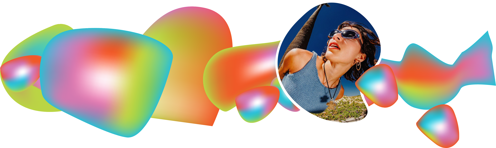
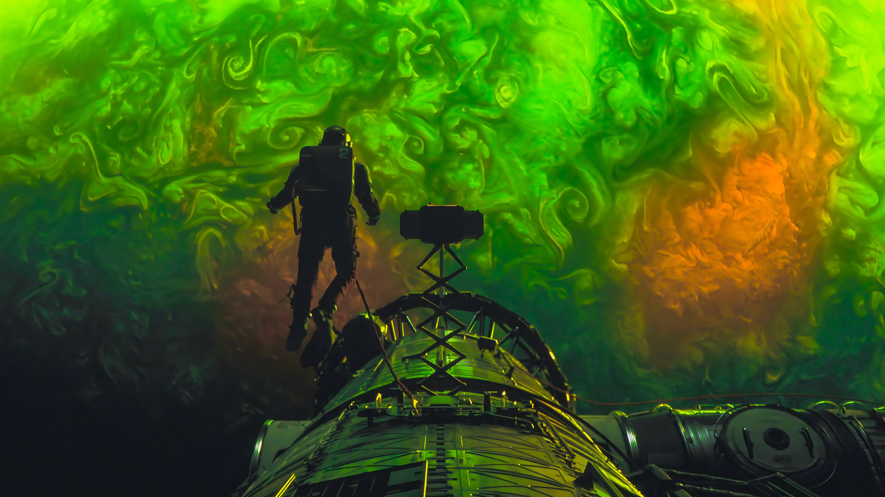
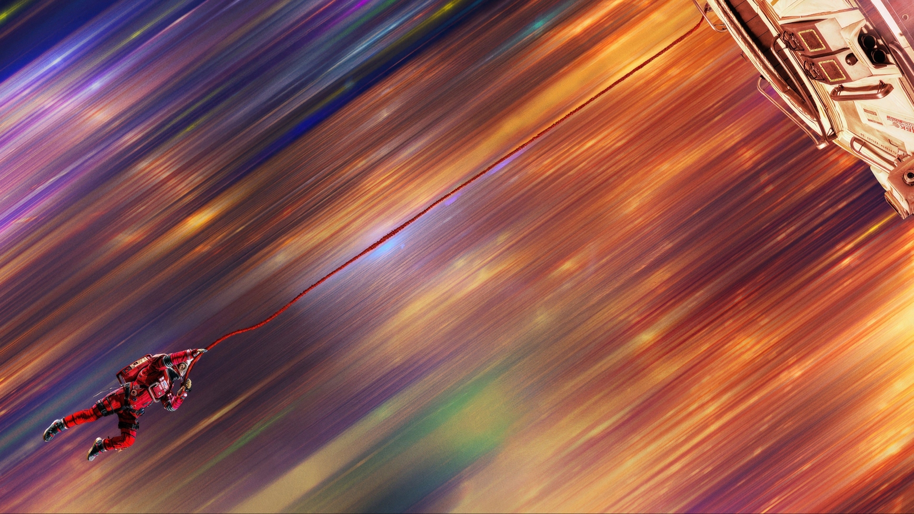
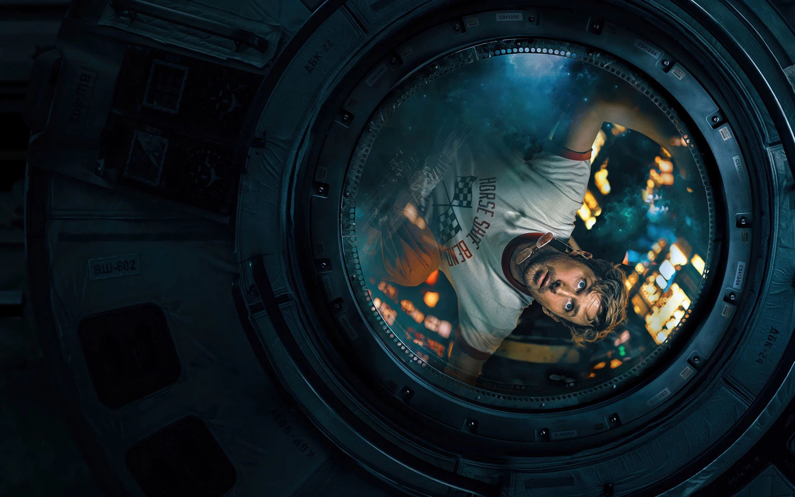
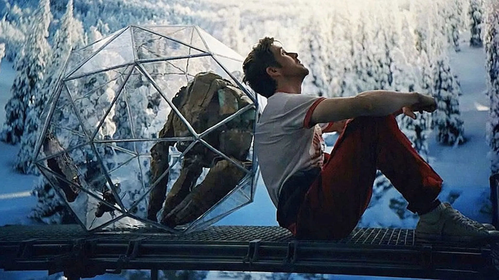

Nyla Ray

About Me
Bachelor Of Design, Majoring in Communication + Media Design
Hellooooᯓ☆ I’m Nyla! I’m a passionate designer with a love for motion and illustration. Growing up, I was always creating characters, and now I’m constantly inspired by artists and designers who build entire worlds through their work.
Through my studies, I’ve enjoyed combining illustration with motion to create designs that feel fun, dynamic, and engaging. Seeing all the possibilities in After Effects has been especially exciting. It’s amazing how exploring the technical side of animation and small details can completely transform a design. I’m continuing to grow my skills in motion design and illustration, and I’m excited to keep experimenting, learning, and creating work that pushes my skills and connects with people in meaningful ways.
Project Hail Mary




This project explores Project Hail Mary as a narrative foundation for motion design, translating its core themes of isolation, problem-solving, and interstellar survival into a series of animated sequences and moving posters. It visualises key ideas from the story such as scientific discovery, communication beyond language, and the urgency of saving Earth through a lone astronaut’s journey in deep space.
The animations use visual metaphors like expanding star fields, shifting molecular structures, and fragmented memory-like sequences to represent the protagonist’s gradual understanding of his mission. Lighting, scale, and motion are used to contrast the vast emptiness of space with moments of clarity and human connection, especially through the evolving relationship with an alien intelligence.
The project aims to make the scientific and emotional depth of Project Hail Mary more accessible and engaging through design. By combining cinematic motion, abstract data visualisation, and narrative-driven visuals, it turns the story’s ideas about resilience, collaboration, and discovery into a visual experience that feels immersive and thought-provoking.